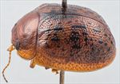
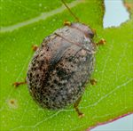
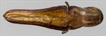
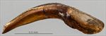
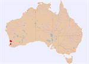

Click on images to enlarge


Male, Bold Park, Perth, SW Western Australia


Female, Burekup, SW Western Australia


Aedeagus, dorsal view (Perth, SW Western Australia)


Aedeagus, lateral view (Perth, SW Western Australia)


Distribution
Name
Trachymela sp. Ta163
Reference specimen
2017-275, Perth, SW Western Australia.
Adult Description
Length: ♂ 5.5–5.7 mm (n=4), ♀ 5.8–6.2 mm (n=3).
Colouration:
- Head: mid-brown, usually completely so, but sometimes with relatively small black maculae in the area between eyes on each side of centre; labrum yellowish-brown, mandibles with black tips; antennomeres 1–4 uniformly light brown, 5–11 similar or grading towards slightly darker brown, often only distal and lateral edges are darker.
- Pronotum: brown, concolorous with or fractionally darker than head, with 4 black maculae usually present – the inner two are positioned with their lateral edge level with inside edge of each eye and slightly anterior to centre of pronotum, the outer one is directly behind centre of eye and centred longitudinally; often the inner and outer maculae are joined into a larger, quadrate macula, sometimes the inner macula extends longitudinally towards posterior edge of pronotum; sometimes the pronotum lacks any black colouration.
- Scutellum: brown, similar shade as pronotum, edged with darker brown.
- Elytra: brown, concolorous with pronotum, with small, round, raised black verrucae scattered somewhat unevenly over much of surface of disc; antero-median depression is less densely populated with verrucae and they are usually smaller there; verrucae sometimes merge to form extended black longitudinal ridges, particularly in VR1, VR3 and VR5; VR10 often prominent as a row of black verrucae extending along the margin of discal area starting under the humeral callus and continuing into marginal sulcus in posterior third almost to apex; a narrow border along elytral suture from scutellum to about summit is usually black; punctures are concolorous with or very fractionally darker than interstices; humeral callus black.
- Venter & Legs: head and thoracic ventrites either uniformly light- to mid-brown, or with inner parts of thoracic ventrites darker, rarely black; legs light- to mid-brown; abdominal ventrites brown, sometimes with black colouration on 5th abdominal ventrite.
- Cuticular Wax: light brown or greyish-brown, scattered evenly to a little unevenly over whole of dorsal surface.
Morphology:
- Shape: very evenly rounded over middle of dorsal surface viewed laterally, with curvature flattening anteriorly over pronotum and head and increasing posteriorly to meet ventral surface at a steep angle, greatest height viewed laterally is clearly in front of middle of elytral margin.
- Head: punctures small (pd ≈ 1–1.5 × ef), very evenly and densely distributed, surface with only a few wrinkles. Antennae very short (AL/BL: ♂ 39–41%, ♀ 34–37%), filiform, outer segments slightly flattened.
- Pronotum: almost evenly curved transversely with lateral margins very slightly explanate, foveal depression shallow and confined to anterior half of pronotum, usually with a small and almost round elevated and more sparsely punctured area in middle, puncturation usually clearly impressed, similar in size to those on head and evenly to somewhat unevenly distributed in discal area, becoming much coarser from foveal depression to lateral margins, interstices smooth in discal area. Thick front margins join somewhat thinner lateral margins in a smoothly rounded right-angle, with lateral margin initially almost straight for more than halfway to posterior margin before curving smoothly and gradually towards rear margin, becoming considerably thicker near rear margin.
- Scutellum: surface smooth or slightly rugose, punctate, with punctures of a similar size and density as adjacent area of pronotum, or, less often, with a few very shallow punctures.
- Elytra: surface evenly curved transversely over discal region, rarely slightly explanate at extreme margins, antero-median depression barely discernable, punctures large, distinct and relatively evenly distributed throughout disc, set deeply among the network of slightly raised interstices, much finer punctures are scattered on the interstices, punctures slighly larger and more widely spaced in marginal area, small round verrucae, sometimes with a small puncture in centre, are scattered somewhat unevenly over elytral surface, though their placement in linear series is obvious, see colouration section above for their distribution, surface continuous under humeral callus. Vertical extension of epipleura considerable (HCE/PW = 0.33–0.38).
- Venter: prosternal process narrowest anteriorly, closed anteriorly, scattered short setae sparsely distributed over prosternal process and mesoventrite, a single seta on anterior, median and posterior trochanters; front edge of metaventrite beveled, truncate; inner edge of posterior of epipleura lacking setae.
Male Genitalia (Aedeagus):
- Dimensions: short (LPE = 22–25% BL), lanceolate.
- Dorsal view: Shaft widest near junction of basal and central sections (WPE = 0.25–0.27 × LPE), then narrowing gradually until about halfway to apex where sides become parallel until close to apex before converging to apex, tip triangular and small; dorsal surface lightly sclerotized, dorsal ostial processes moderately long, ostial opening relatively small.
- Lateral view: Shaft angled about 35-40° at about basal sulcus, almost evenly and gradually curved from there to apex, tip slightly deflexed.
Similar species
- Ta154: occurs in the same area and the two species are sometimes found together. Ta154 can be very difficult to distinguish from Ta163. They differ in the colour of the scutellum, which is almost invariably black in individuals of Ta154 but brown in Ta163. Individuals of Ta154 tend to be slightly larger, though the size distributions overlap extensively, and are largely black ventrally, with most specimens paler only on the terminal abdominal ventrites, while those of Ta163 are mostly mid-brown, with black only in inner parts of thoracic ventrites. However, very pale individuals of Ta154 can approach the colouration of very dark individuals of Ta163. The density of elytral verrucae tends to be slightly higher in Ta154, and the black macula on the fovea of the pronotum is never extended into a large quadrate patch, as is often the case in Ta163.
Notes
- Taxonomy: Ta163 is very likely to be Trachymela granaria (Chapuis) from the description and Blackburn's key, though this identification is by no means definitive.
- Host Associations: The only two host records for this species are from unidentified Corymbia and Eucalyptus species.
Copyright © 2026. All rights reserved.